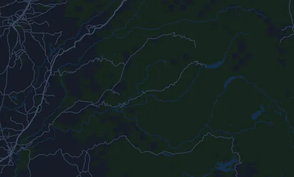

Western States 100-Mile Endurance Run 161 km
- Distancia
- 161,1 km
- Desnivel positivo
- ↑ 5474 m
- Punto más alto
- 2651 m s. n. m.
- Superficie
- Trail y sendero
- Perfil
- Muy ondulado
Perfil de altitud
Prepárate con Mila
Mila es un coach de running en una app. Si añades una carrera a tu plan, el coach planifica tus semanas hasta la salida según tu forma y te da un pronóstico de tiempo y un plan de ritmo, hidratación y energía para el recorrido.

La sesión justa. El día justo.
El recorrido

Sobre el recorrido
Western States 100-Mile Endurance Run es una carrera de trail de 161,1 km (Olympic Valley, Estados Unidos). El recorrido acumula 5474 m de desnivel positivo y 6980 m de desnivel negativo, 34 m por km, así que es muy ondulado. El punto más alto está a 2651 m sobre el nivel del mar y el más bajo a 162 m.
La subida más grande empieza en el km 0,0: 751 m de desnivel en 5,7 km, con un 13,3 % de media, hasta los 2651 m. En total, el recorrido tiene 37 subidas de al menos 25 m; la última empieza en el km 155,5.
En la app Mila, el coach describe el recorrido en detalle en tu idioma y planifica tu ritmo y tu avituallamiento.
Subidas
| Empieza en | Longitud | Desnivel | Pendiente | Cima (m s. n. m.) |
|---|---|---|---|---|
| km 0,0 | 5,7 km | 751 m | 13,3 % | 2651 |
| km 7,7 | 400 m | 39 m | 9,7 % | 2510 |
| km 10,5 | 850 m | 57 m | 6,8 % | 2314 |
| km 15,8 | 1,8 km | 46 m | 2,5 % | 2159 |
| km 17,8 | 850 m | 97 m | 11,5 % | 2241 |
| km 19,6 | 850 m | 52 m | 6,1 % | 2244 |
| km 22,9 | 1,2 km | 99 m | 8,5 % | 2221 |
| km 24,2 | 740 m | 36 m | 4,8 % | 2249 |
| km 26,4 | 550 m | 25 m | 4,6 % | 2201 |
| km 28,8 | 710 m | 45 m | 6,3 % | 2152 |
| km 32,0 | 1,1 km | 63 m | 5,9 % | 2120 |
| km 39,8 | 1,6 km | 77 m | 4,7 % | 1824 |
| km 43,5 | 2,4 km | 167 m | 7,1 % | 1830 |
| km 46,0 | 1,6 km | 186 m | 11,8 % | 2009 |
| km 48,1 | 940 m | 76 m | 8,0 % | 2058 |
| km 49,1 | 1,4 km | 68 m | 4,8 % | 2118 |
| km 53,3 | 1,1 km | 26 m | 2,3 % | 1934 |
| km 56,5 | 510 m | 26 m | 5,1 % | 1842 |
| km 74,5 | 2,7 km | 499 m | 18,6 % | 1332 |
| km 77,4 | 650 m | 27 m | 4,3 % | 1336 |
| km 85,4 | 4,1 km | 527 m | 12,7 % | 1077 |
| km 91,2 | 1,8 km | 111 m | 6,2 % | 1135 |
| km 95,8 | 2,6 km | 228 m | 8,6 % | 1033 |
| km 105,1 | 1,1 km | 62 m | 5,4 % | 641 |
| km 107,9 | 1,9 km | 41 m | 2,2 % | 632 |
| km 109,8 | 860 m | 41 m | 4,7 % | 670 |
| km 116,3 | 690 m | 92 m | 13,3 % | 371 |
| km 117,6 | 900 m | 43 m | 4,8 % | 341 |
| km 120,0 | 2,5 km | 39 m | 1,6 % | 290 |
| km 124,9 | 3 km | 225 m | 7,6 % | 445 |
Preguntas frecuentes
¿Cuándo es Western States 100-Mile Endurance Run 161 km?
Western States 100-Mile Endurance Run 161 km se celebra el sábado, 26 de junio de 2027. Comprueba la fecha y la hora de salida con el organizador.
¿Cuánto mide Western States 100-Mile Endurance Run 161 km y cuánto desnivel tiene?
La carrera tiene 161,1 km, con 5474 m de desnivel positivo y 6980 m de desnivel negativo. El punto más alto está a 2651 m sobre el nivel del mar.
¿Cómo es el recorrido de Western States 100-Mile Endurance Run 161 km?
El recorrido es muy ondulado, con 34 m de desnivel por km de media. Tiene 37 subidas de al menos 25 m; la mayor empieza en el km 0,0: 751 m en 5,7 km. Va de la salida a una meta situada en otro lugar. Se corre por senderos y caminos.
¿Cómo reparto el ritmo en Western States 100-Mile Endurance Run 161 km?
Busca un esfuerzo constante más que un ritmo constante: deja que el ritmo baje en las subidas, recupéralo cuando el terreno se allane y contente en los primeros kilómetros. Las subidas más grandes empiezan en el km 0,0, km 74,5, km 85,4 y km 155,5. En Mila tienes un plan de ritmo para este recorrido, según tu propia forma.
Más carreras como esta
Más carreras cerca
- Hardrock Hundred Mile Endurance Run (Hardrock 100) 161 km9 de julio de 2027 · Silverton, Colorado, Estados Unidos
- Badwater 135 217 km19 de julio de 2027 · Badwater Basin, Death Valley, Estados Unidos
- BOLDERBoulder 10K31 de mayo de 2027 · Boulder, Colorado, Estados Unidos
- Speedgoat Mountain Races by UTMB – 50K24 de julio de 2027 · Snowbird, Estados Unidos
- Falmouth Road Race 11,3 km15 de agosto de 2027 · Woods Hole, Falmouth, Estados Unidos
- Leadville Trail 100 Run 160,5 km21 de agosto de 2027 · Leadville, Colorado, Estados Unidos
Prepárate con Mila
La sesión justa. El día justo.
Los datos proceden del archivo del recorrido y de la información del organizador. Comprueba la fecha, las horas de salida y el reglamento con el organizador.
Mila no está vinculada al organizador ni a los patrocinadores de la carrera, ni está patrocinada o avalada por ellos. Los nombres y las marcas pertenecen a sus propietarios. ¿Organizador o titular de derechos? Solicitar un cambio o la retirada